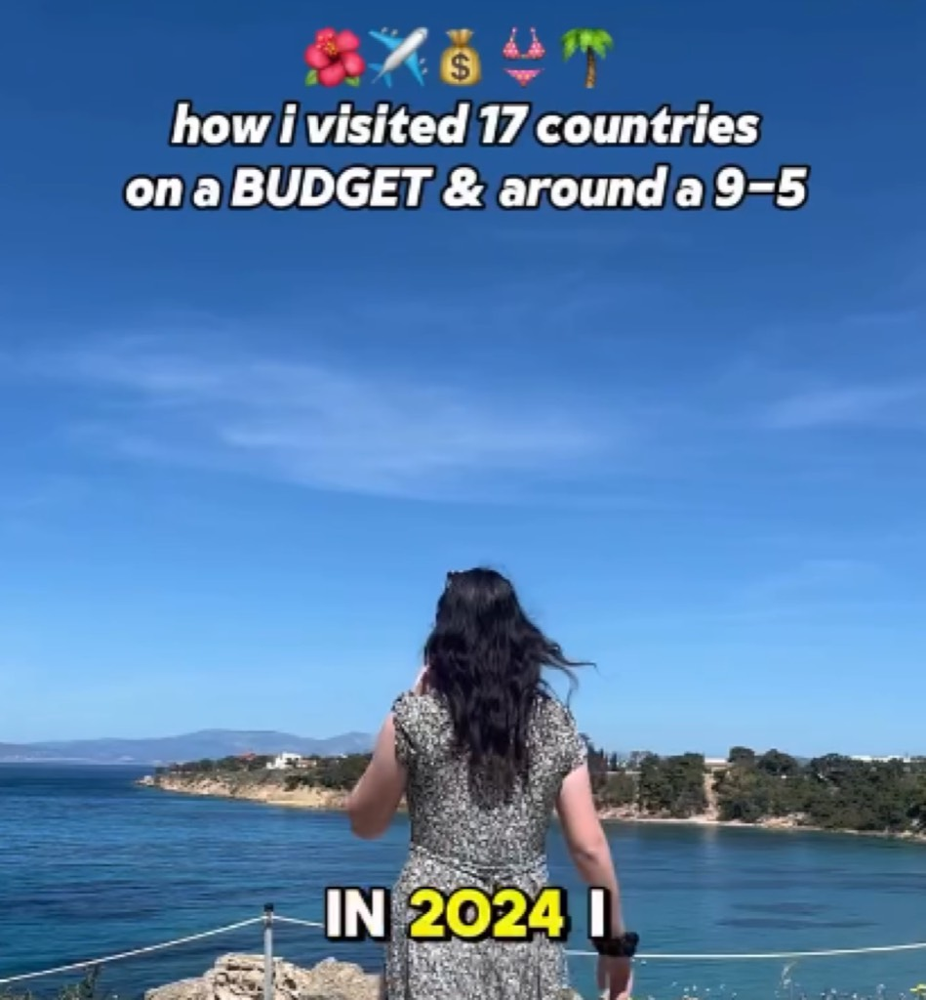

Leah Shoup of Gringa Journeys is Chasing the Life She's Been Dreaming of
When travel content creator and entrepreneur Leah Shoup founded Gringa Journeys, she embarked upon ambitious pursuit of transforming travel interests into sustainable business model while simultaneously building community around Latin American exploration and cultural engagement. Her journey represents contemporary entrepreneurship patterns merging personal passion with digital platform monetization and building audience-dependent business models. Shoup's work demonstrates how travel content creators navigate tension between authentic experience documentation and commercial imperatives, attempting to maintain genuine connection with audiences while generating revenue through sponsored content and business offerings. Her platform represents significant intervention within travel influencer landscape, emphasizing cultural respectfulness and community engagement rather than superficial tourism documentation.
Leah Shoup established herself as significant travel content creator through commitment to authentic cultural engagement, Spanish language fluency, and respectful approach to Latin American tourism and exploration. Rather than pursuing surface-level travel documentation emphasizing aesthetic backdrops and luxury accommodation, she emphasized genuine cultural connection, local community engagement, and substantive travel guidance. Her Gringa Journeys platform evolved from personal travel documentation into substantial business incorporating tours, educational content, and community engagement initiatives. The growth trajectory demonstrates audience appetite for authentic travel content and trust-based influencer relationships permitting sustainable monetization through direct audience support.

Her work has achieved recognition within travel content communities and influencer marketing discourse, establishing Shoup as significant figure within ethical travel content creation and cultural tourism education. Followers appreciate her commitment to authentic engagement and cultural respect, distinguishing her approach from mainstream travel influencer practices frequently criticized for cultural appropriation and superficial representation.
Shoup's content employs diverse platforms and formats—Instagram, YouTube, podcast, and direct community offerings—enabling multifaceted audience engagement and revenue stream diversification. Her content creation demonstrates sophisticated understanding of platform-specific conventions while maintaining consistent brand voice and authentic perspective across formats. The technical execution involves video production, photography, audio editing, and content optimization for algorithm-driven platform distribution. Her approach emphasizes authentic documentation and genuine reflection rather than manufactured enthusiasm or performative travel engagement.
Cultural Significance
Shoup's work carries significance within broader conversations regarding responsible tourism, cultural engagement, and ethical influencer practices. By emphasizing cultural respect and authentic community connection rather than aesthetic documentation and superficial tourism, she contributes to expanding conversations regarding what responsible travel looks like and how content creators can promote meaningful cultural engagement. Her commitment to Spanish language fluency and substantive cultural knowledge contrasts with many travel influencers maintaining linguistic distance from visited communities.
Inspiration and Process
Shoup's inspiration emerges from genuine passion for Latin American travel and culture, combined with recognition of opportunities to build sustainable business around this interest. Rather than treating travel documentation as peripheral to established career, she committed to building travel content creation into primary professional focus. Her process involves continuous travel, authentic documentation, community engagement, and iterative business model development responding to audience interests and market dynamics.
Audiences encountering Gringa Journeys typically respond to authenticity and cultural respect evident in Shoup's documentation and community engagement. The platform differentiates itself through substantive content, language education, and community-focused offerings rather than pursuing aesthetic tourism documentation. Followers develop long-term relationships with Shoup's content, generating sustained audience loyalty enabling business sustainability.
Leah Shoup represents significant contemporary travel content creator demonstrating how authentic cultural engagement and ethical influencer practices can sustain viable business models. Through building community around respectful Latin American tourism and cultural education, she contributes meaningfully to expanding conversations regarding responsible travel and content creator responsibilities toward represented communities.